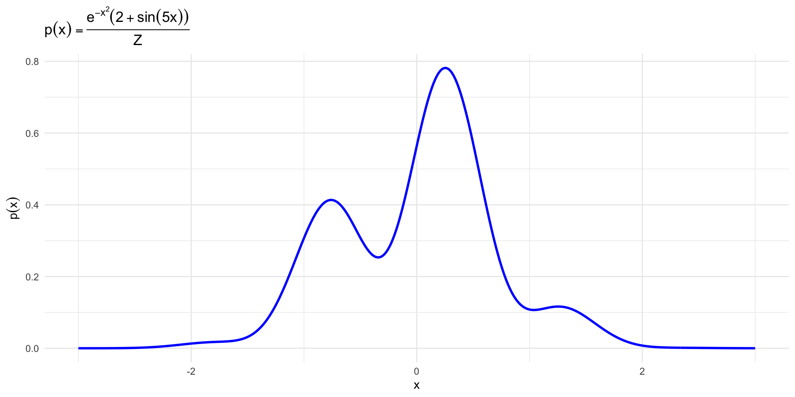
MCMC Part 1
Overview
Today, we cover:
- Markov chains
- MCMC
- Metropolis-Hastings
Tomorrow:
- Gibb’s sampling
Resources:
- Peng Advanced Stat Computing Chapter 7
Joint posterior distribution
Our goal is to learn about the joint posterior distribution
\[p(\beta, \sigma^2_y|y, X, hyperparameters)\]
This can be hard!
- Often the joint posterior is analytically intractable
- For the conjugate priors we use, though, the full conditionals were “easy”
- If we can’t write down the joint posterior, maybe we can sample from it
This is the main motivation for MCMC
MCMC
Basic idea: How do I get a string of values from the posterior when I cannot write the posterior down?
- Markov chain Monte Carlo (MCMC) methods let you sample from complicated [posterior] distributions
- a collection of tools used to sample from a target distribution
- Once you have a sample from the posterior distribution you can use summary statistics (mean, variance, quantiles) to do posterior inference
First we will review Markov chains
Gibbs sampler is a special case of M-H sampler You can think about this analogously to bootstrap in some ways- once you have a sample from a distribution, you can learn about that distribution
Markov chains
A Markov chain is a stochastic process that evolves over time by transitioning into different states. - The sequence of states is denoted by \(\{X_i\}\) - Transition between states is random and follows the Markov property:
\[P(X_t | X_{t-1}, X_{t-2}, \ldots, X_0) = P(X_t|X_{t-1})\]
FYI: this notation is for discrete distributions
Core concept: The probability of transitioning to a state at time \(t\) depends only on the most recent previous state
State space: collection of states that a Markov chain can visit
Transition matrix: collection of probabilities that we move from one state to another
Another word for random is probabilistic. Using discrete distribution here to get at the general idea, but usually we will be working with continuous distributions. - transition matrix also sometimes called transition Kernel
Markov chain example
Draw picture here with three state example, and it’s transition matrix
Markov chain properties
\[P = \begin{bmatrix} \frac{1}{2} & \frac{1}{2} & 0 \\ \frac{1}{2} & 0 & \frac{1}{2} \\ 0 & \frac{1}{2} & \frac{1}{2} \end{bmatrix}\]
Each entry of \(P\) is the probability of going from state \(i\) to state \(j\), i.e.
\[P(X_{n+1} = j |X_n = i) = P_{ij}\]
- Sum of weights from outgoing arrows = 1
- Starting with one state and sampling a string of subsequent states is called a random walk
- Goal is to find probabilities of being in each state
Here is the transition matrix from the previous example
Markov chain properties
Suppose we start the chain in state 3, with probability 1, so the initial probability distribution over the three states is \(\pi_0 = (0,0,1)\).
- What is the probability distribution over the states after one iteration?
- What is the probability distribution over the states after \(n\) iterations?
- \(\pi_1 = \pi_0P = (0, 1/2, 1/2)\)
- \(\pi_n = \pi_0PPP\times \ldots\times P = \pi_0 P^n\)
- As \(n\) increases, we expect this to settle into a steady state
Markov chain properties
\(\pi_*\) is called the stationary distribution. This is the vector of probabilities of being in each state that the chain converges to.
Markov chain limit theorem
Basic limit theorem for Markov chains says
\[||\pi_*-\pi_n|| \to 0 \mbox{ as } n\to \infty\]
where \(||\cdot||\) is the total variation distance between two densities.
- another way of saying this is \(\lim_{n\to\infty} \pi^n = \pi_*\) regardless of the starting state
In the long run, the chain “forgets” where it started and settles into a stable distribution over the states. That stable/stationary distribution is \(\pi_*\), and the process spends a proportion \(\pi_j\) of time in state \(j\).
This limit theorem holds under some necessary assumptions
Markov chain assumptions
The stationary distribution \(\pi_*\) exists.
The chain is irreducible: it is possible to reach any state from any other state (eventually)
- The chain is aperiodic: the chain does not cycle in a fixed period. A chain is aperiodic if it does not make deterministic visits to a subset of the state space.
You don’t have to be able to reach other states in just one step. - periodicity means you can deterministically flip between states. Use pizza on Mondays example If these assumptions hold, then Markov chain limit theorem holds and the stationary distribution is unique.
Time-reversible Markov chains
In a reversible Markov chain, the process looks the same if you run it forward or backward in time.
- At equilibrium (the chain’s long-run steady state), the traffic between any two states is perfectly balanced. For any two states A and B, the probability of transitioning from A to B times the long-run probability of being in A equals the probability of going from B to A times the long-run probability of being in B
MCMC methods use Markov chains to sample from a target probability distribution. The goal is to construct a chain whose stationary distribution is the target distribution we want to sample. Reversibility ensures we have the correct stationary distribution.
Why do we care about this for MCMC?
Why Reversibility Matters for MCMC
- Ensures correctness: target distribution is the stationary distribution
- Prevents systematic bias: no net directional drift in sampling
- Simplifies algorithm design and analysis (e.g., Metropolis-Hastings)
- Makes it easier to combine steps while preserving invariance
- Widely used in MCMC due to theoretical guarantees and reliability
Review: rejection sampling
What did we learn about this at a high level? What is the point of this? - Just draw a picture here - Try to provide visual intuition behind this, and why it is inefficient when M is large. Also, because samples are independent we don’t learn anything from previous samples about how good they are
MCMC intuition
- Next sample depends on the last sample
- Samples are no longer independent
- Eventually Markov chain will simulate draws from target distribution
- If a Markov chain reaches a stationary distribution, it will stay there
- Goal is to design a Markov chain whose stationary distribution is the target distribution
MCMC is a general idea, not an algorithm. - draw picture for this too and connect it to rejection sampling
MCMC
Term MCMC encompasses broad array of techniques that have in common a few key ideas:
- We want to sample form a complicated density or probability mass function \(\pi\), often a posterior distribution. Assumption is we can evaluate \(\pi\) but not directly sample from it
- We know that certain stochastic processes called Markov chains will converge to a stationary distribution.
- Simulating from a Markov chain for long enough will eventually gives us a sample from the chain’s stationary distribution
- Given the functional form of the density \(\pi\), we want to construct a Markov chain that has \(\pi\) as its stationary distribution
- We want to sample values from the MC such that the sequence of values \(\{x_n\}\) generated by the chain converges in distribution to \(\pi\).
If we can construct a Markov chain whose stationary distribution is our target \(\pi\) then we can sample from \(\pi\). Markov chains converge to their stationary distribution if it exists and specific conditions are satisfied - How you design your markov chain differs from method to method
Metropolis-Hastings algorithm
Suppose we want to take a sample \(x \sim \pi(x)\) using MCMC.
-Metropolis-Hastings is a popular algorithm (circa 1970) for doing this.
Some terminology:
- target distribution is \(\pi(x)\), the distribution I want to sample from
- proposal distribution is \(q(y|x)\), some probability distribution that is easy to sample from that has the same support as \(\pi\)
- You can equivalently think of this as a transition probability to get from \(x\) to the next state \(y\)
- acceptance probability aka acceptance ratio, denoted \(\alpha(y|x)\), is the probability of transitioning to a new stage in the Markov chain
- note that these things were invented a long time a go but it took quite a while for them to take off, until computers got much faster. Hastings didn’t even get tenure!
Steps of Metropolis-Hastings
The Metropolis-Hastings procedure is an iterative algorithm where at each iteration, there are three steps. Suppose we are currently in state \(x\) and want to know how to move to the next state in the state space (which we will call \(y\)).
Simulate a candidate value \(y\sim q(y|x)\) from the proposal distribution, conditional on current state \(x\).
Calculate the acceptance ratio,
\[\alpha(y|x) = \min\left\{\frac{\pi(y)q(x|y)}{\pi(x)q(y|x)}, 1\right\}\] (3) Simulate \(u\sim Unif(0,1)\). If \(u\le \alpha(y|x)\), then the next state is equal to \(y\). Otherwise, the next state is still \(x\).
Recall our hope is that our Markov chain will, after many simulations, converge to the stationary distribution.
Simple example
Say we want to sample from the probability distribution \(p(x)\) given below:
\[\begin{align} p(x) &= \frac{\exp(-x^2)(2 + \sin(5x) + \sin(2x))}{\int_{-\infty}^{\infty}\exp(-x^2)(2 + \sin(5x) + \sin(2x))dx}\\[3mm] &\propto \exp(-x^2)(2 + \sin(5x) + \sin(2x)) \end{align}\]
- bit of a contrived example to show how it works but we will do a more complex example next Usually problems like this we just call the denominator the normalizing constant
Simple example
Simple example
Domain of \(x\) is unrestricted. Let \(x\) be our current value and \(y\) the next value in the chain.
- To generate \(y\) we will add a \(N(0, 1)\) random variable to our current value of \(x\)
- This implies the proposal distribution \(q(y|x)\) follows \(y \sim N(x, 1)\)
The more general idea here is to let \(y = x + \epsilon\), where \(\epsilon \sim g\) and \(g\) is a probability density symmetric about 0.
- Sometimes called a “random walk” Metropolis-Hastings
- Using a symmetric proposal distribution is also called the Metropolis algorithm
Notice that the distribution we sample from depends on the current state of the Markov chain
Acceptance ratio step
\[\alpha(y|x) = \min\left\{\frac{\pi(y)q(x|y)}{\pi(x)q(y|x)}, 1\right\}\]
Note here why the normalizing constant will go away, and why the \(\alpha\) simplifies
Acceptance ratio step
\[\alpha(y|x) = \min\left\{\frac{\pi(y)}{\pi(x)}, 1\right\}\] First, we calculate this ratio.
Then simulate \(u\sim Unif(0,1)\).
- If \(u\le \alpha(y|x)\), then the next state is equal to \(y\). Otherwise, the next state is still \(x\).
Simple example implementation
target = function(x){
exp(-x^2) * (2 + sin(5 * x) + sin(2 * x))
}
metropolis_step = function(x, sigma) {
y = rnorm(1, mean = x, sd = sigma)
accept_prob <- min(1, target(y) / target(x))
u = runif(1)
if(u <= accept_prob) {
value = y
accepted = TRUE
} else {
value = x
accepted = FALSE
}
tibble(value = value, accepted = accepted)
}Simple example implementation
metropolis_sampler = function(initial_value,
n = 1000,
sigma = 1) {
results = as.list(rep(NA, n))
current_state = initial_value
for(i in 1:n) {
out = metropolis_step(current_state, sigma)
current_state = out$value
results[[i]] = out
}
results = do.call(rbind, results)
results
}Simple example implementation
set.seed(34634634)
chain1 = metropolis_sampler(initial_value = 0, n = 1000)
head(chain1)# A tibble: 6 × 2
value accepted
<dbl> <lgl>
1 -0.0264 TRUE
2 -0.0791 TRUE
3 -0.0791 FALSE
4 -0.0791 FALSE
5 1.46 TRUE
6 1.46 FALSE Could be helpful to plot rolling acceptance ratio
Visualizing results
set.seed(3463)
chain2 = metropolis_sampler(initial_value = 0, n = 1000)
chain3 = metropolis_sampler(initial_value = 10, n = 1000)
chain4 = metropolis_sampler(initial_value = -20, n = 1000)Visualizing results
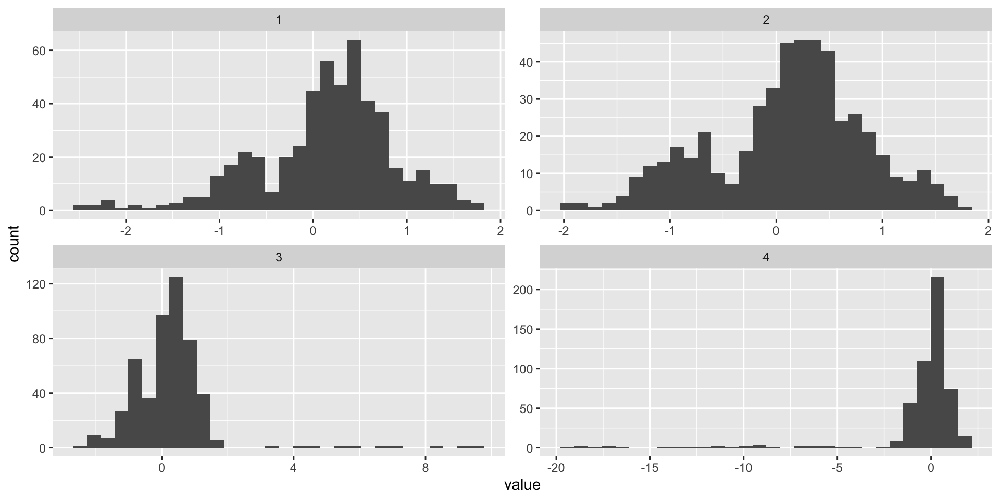
Acceptance probabilities
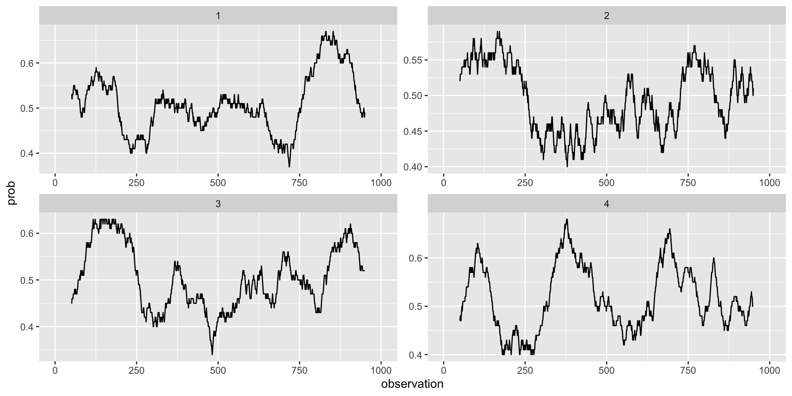
Some terminology
- Burn-in: the initial period of an MCMC simulation discarded to allow the chain to reach its stationary distribution.
- Lag: refers to the number of steps between samples used to reduce autocorrelation and improve the independence of the retained draws.
- Mixing rate: refers to how quickly an MCMC chain explores the target distribution, with better mixing indicating faster decorrelation between samples.
- Proposal width is a parameter of the proposal you can vary to tune this
We will look at how each of these affect the sampler
Burn-in
Convergence occurs regardless of our starting point (in theory), so we can usually pick any reasonable values in the parameter space for initial value(s).
- The farther away you are from high density regions the longer it will take to reach the stationary distribution (i.e. target distribution \(\pi(x)\))
- Sample you generate early on will probably not follow \(\pi(x)\)
- Generally we throw out a certain number of the first draws, known as burn-in to make sure our sample is closer to the stationary distribution and less dependent on starting values
What is a good starting point for our distribution example? - Not always obvious how much burn in to discard, and the decision is fairly arbitrary - plots can help
Burn-in: \(x_0 = -20\)
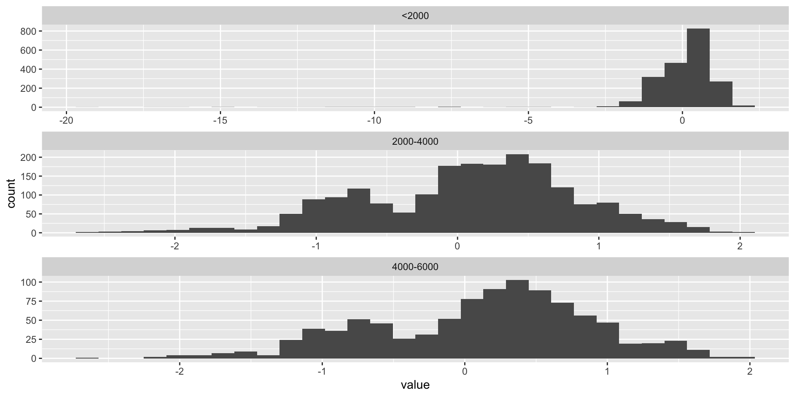
Lag
This is essentially the number of iterations we run the sampler for between successive samples.
- MCMC samples are not independent! By definition, each sample depends on the previous sample
- This means there is a time-dependent autocorrelation
- One way to reduce correlation in your samples and have draws that are more independent is to allow several iterations of the sampler to elapse in between successive samples.
- This is the lag
- More of a problem when the MCMC cannot make big jumps within the parameter space
When can this last point occur? Small variance of your proposal distribution
Lag: autocorrelation plots
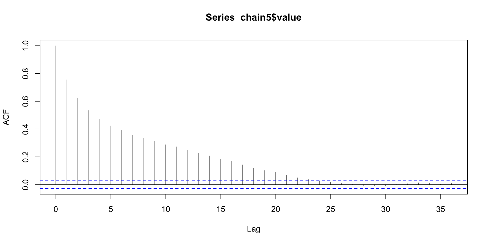
Mixing rate
In practice the choice of proposal distribution matters a lot.
If it’s too narrow, your sampler will have an extremely high acceptance rate on average, but it will move around extremely slowly, that is,
- i.e. it has a low mixing rate.
If it’s too wide, the acceptance rate becomes too low and the chain gets stuck on specific values for long periods of time.
Varying the proposal width can affect this
Effect of proposal width
set.seed(34634)
chain_1 = metropolis_sampler(initial_value = 0, n = 1000, sigma = 1)
chain_.025 = metropolis_sampler(initial_value = 0, n = 1000, sigma = .025)
chain_50 = metropolis_sampler(initial_value = 0, n = 1000, sigma = 50)Effect of proposal width
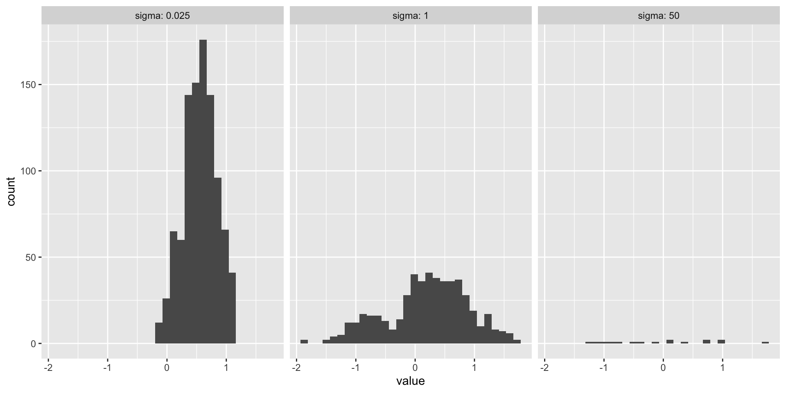
Effect of proposal width
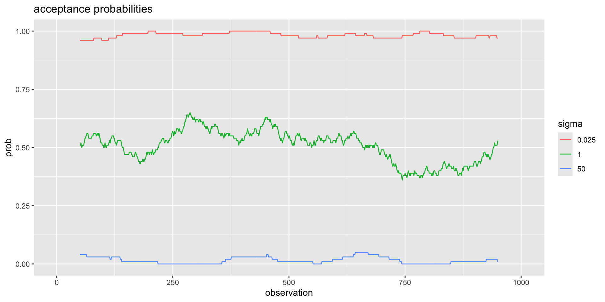
Convergence
We will not cover the convergence theory behind Metropolis chains in detail, but …
The Markov process generated under this procedure is ergodic (irreducible and aperiodic) and has a unique limiting distribution (stationary distribution) ergodicity means that the chain can move anywhere at each step, which is ensured if \(q(y|x)>0\) everywhere
By construction, Metropolis chains are reversible, so that \(\pi(y|x)\) is the stationary distribution
Convergence diagnostics
Convergence diagnostics are used to assess if your chain has converged.
- Cannot guarantee if a chain has converged, but they can indicate that it has not converged
- Not specific to Metropolis-Hastings, apply to MCMC more generally
- Trace plot
- Autocorrelation plot
- Density plots for multiple chains
- Effective sample size
Trace plot
Shows sample values of an MCMC parameter over iterations
- Plot the whole chain (both accepted and rejected samples)
The chain should:
- fluctuate around a stable mean without visible trends or drifts over time
- Avoid long streaks of similar values (these indicate high autocorrelation or poor mixing)
- Explore the full parameter space
Trace plot
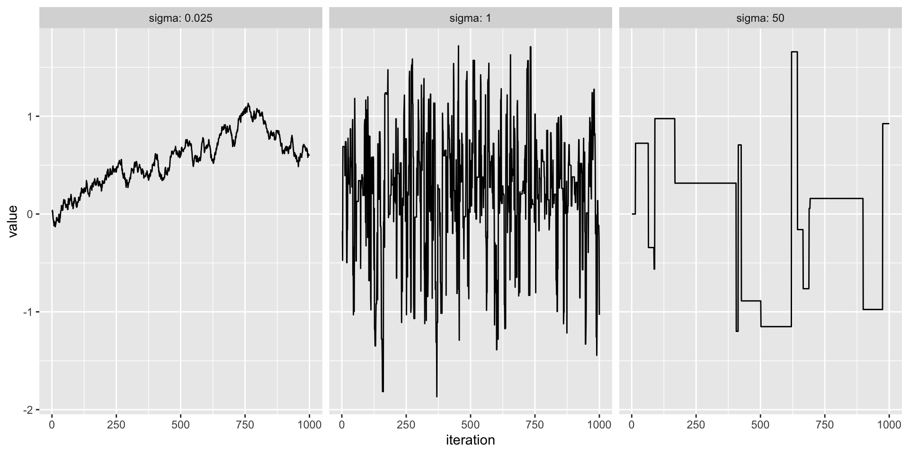
Autocorrelation plot
Shows correlation between samples at different lags. Lower autocorrelation means better mixing and more efficient sampling.
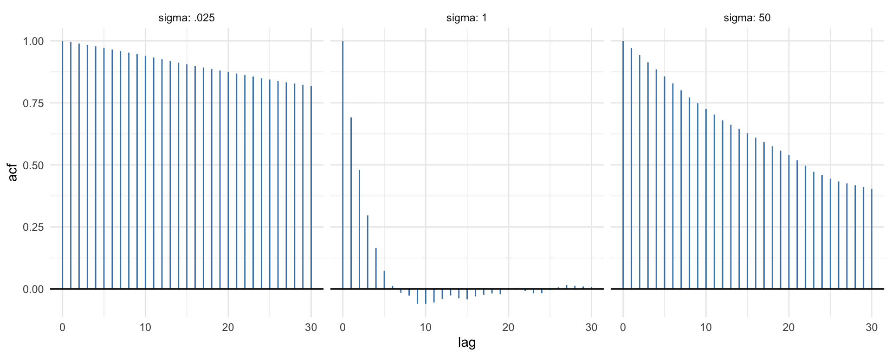
Density plots
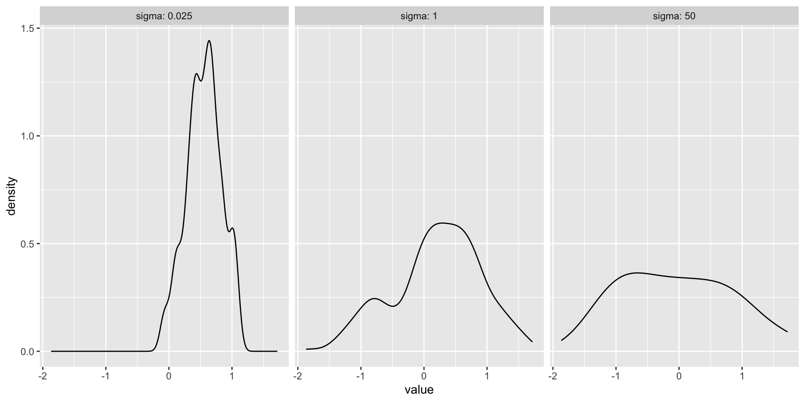
For these just plot accepted samples.
Density plots
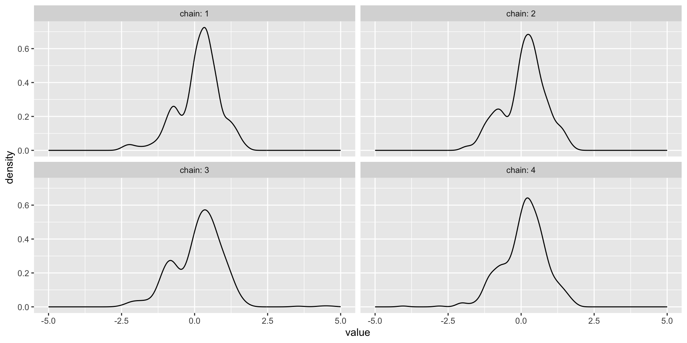
Effective sample size
The effective sample size translates the number of MCMC samples \(S\) into an equivalent number of independent samples.
\[ESS = \frac{S}{1 + 2\sum_k\rho_k}\]
where \(\rho_k\) is the lag \(k\) autocorrelation.
- Can calculate ESS using
coda::effectiveSize.
Effective sample size
library(coda)
effectiveSize(chain_.025$value) %>% as.numeric()[1] 2.742461effectiveSize(chain_1$value) %>% as.numeric()[1] 207.9327General diagnostic rules
Run multiple chains with different starting values
Discard the first 1000 or so samples (depending on the problem)
Check diagnostic plots!
There are other diagnostic statistics (Gelman-Rubin, Geweke) that we haven’t discussed